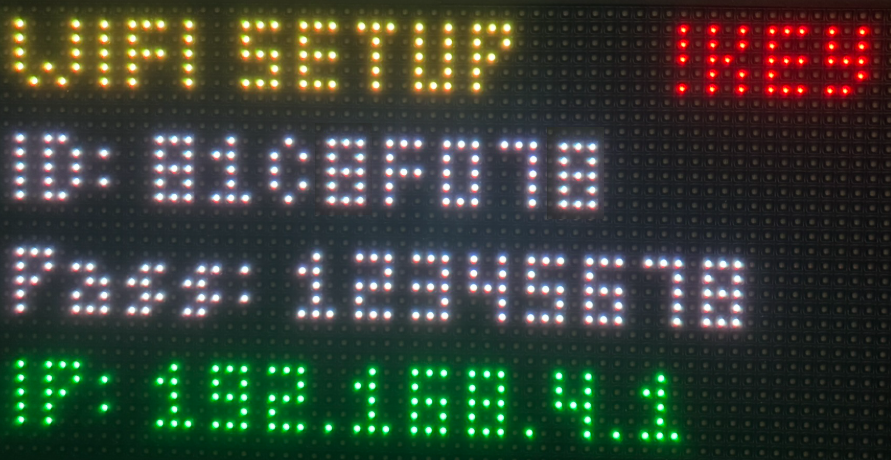
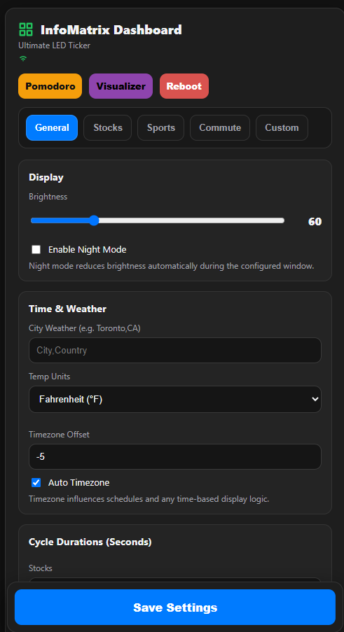

What's in the Box
Includes the InfoMatrix 3D display unit only. A USB-C cable and USB wall power adapter may not be included.
Documentation
Connect your display to Wi-Fi, open the web dashboard, and start tracking stocks, crypto, sports scores, weather, and commute times in minutes.
Includes the InfoMatrix 3D display unit only. A USB-C cable and USB wall power adapter may not be included.
Use a dedicated 5V / 2A (minimum) non-PD USB wall charger and a quality USB-C cable. Computer USB ports often lack sufficient current.
Ensure your router broadcasts a 2.4 GHz Wi-Fi network. 5 GHz-only networks are not supported.
192.168.4.1) on the LED matrix.http://192.168.4.1 in the address bar.192.168.4.1.
dBm;, or click Rescan Networks to refresh.
No Config!, a new local IP address assigned by your network (for example, 192.168.0.105), and Check Web UI.http://192.168.0.105).For detail dashboard manual click here.

General tab)On models equipped with a physical button, press and hold the button for 4 seconds to activate Focus (Pomodoro) Mode.
Check for the latest features and firmware releases anytime at update.infomatrix3d.com.
Questions about setup, custom features, or orders? Email infomatrix.contact@gmail.com.
| Issue | Recommended Fix |
|---|---|
| Display is dim, flickering, or rebooting randomly | Ensure your USB power adapter supplies at least 5V / 2A (non-PD). Avoid powering the unit from a computer USB port, and try a different high-quality USB-C cable. |
| Network is missing or won't connect | Click Rescan Networks, verify your router is broadcasting a 2.4 GHz signal (5 GHz-only networks are not supported), check your password, or use Manual Wi-Fi Setup for hidden networks. |
Cannot open 192.168.4.1 during initial setup |
Confirm your phone or computer is still connected to the device's temporary hotspot. On mobile devices, temporarily disable cellular data or VPNs if the browser refuses to load local IP addresses. |
| Cannot open the Dashboard IP after setup | Verify that your phone or PC is connected to the same Wi-Fi network as the InfoMatrix display, and type http:// before the IP address shown on the screen. |